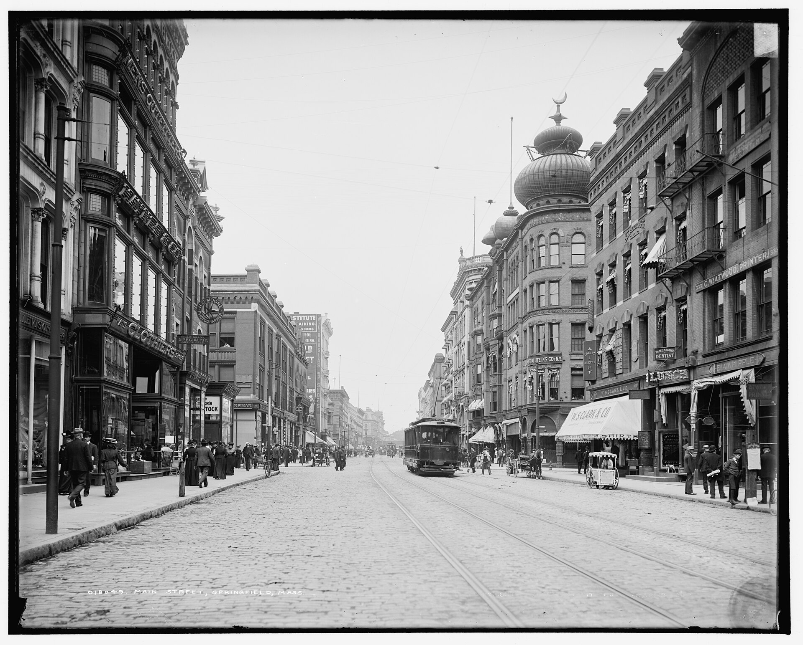

Community in Modern America and Capstone Preparation
Lesson
Lesson 16.02
Topic
Capstone Preparation: The Sociology of Community Flourishing
Module Theme
Community in Modern America
🔊 READ ALOUD — LISTEN TO THIS PAGE
Lesson 16.02
Capstone Preparation: The Sociology of Community Flourishing
Lesson
📖 FOCUS
Two quarters of training in how to see, pointed at one real place.
The Community Flourishing Capstone runs Weeks 15 to 17 and is due at the end of Week 17. It is the course's culminating assignment, and it asks for the same work done on a real community that the course has done on a text: read it carefully, apply a framework honestly, and reach a conclusion you can defend.
🎯 BY THE END OF THIS LESSON YOU WILL BE ABLE TO…
1
I will be able to state the Capstone's exact requirements and select a community and at least three of its institutions to evaluate.
2
I will be able to write a specific, arguable thesis about what my chosen community's condition reveals about the sociology of flourishing.
3
I will be able to match at least four frameworks from the course and at least three primary sources from this course to the specific institutions I plan to evaluate.
📚 PART 1 · WHAT THE CAPSTONE ACTUALLY REQUIRES
THE CAPSTONE, IN FIVE STEPS
Five checkable requirements.
STEP 1
Choose a community
A neighborhood, town, religious community, school, online community, or any recognizable social group. May be the same community as your Institution Study.
→
Evaluate 3+ institutions
STEP 2
Family structure, authority, economic life, education, religion, or how it handles change. Assess strengths and weaknesses in each.
→
STEP 3
Apply 4+ frameworks
Apply at least four frameworks from the course, each doing distinct work on those institutions.
→
STEP 4
Cite 3+ primary sources
Integrate quotations or paraphrases from at least three Primary Source Guide pages meaningfully, not as decoration.
→
STEP 5
Recommend
Close with concrete, well-reasoned recommendations grounded in sociological theory, not personal opinion alone.
1,200–1,800 words · due end of Week 17
Research comes first. Gather information about the community's key institutions: how families are structured, how authority is organized, how economic life functions, how education and religion operate, and how the community handles social change. Watch for patterns, tensions, and strengths rather than settling for a first impression.
📚 PART 2 · PICK A COMMUNITY, HONESTLY
Test a candidate community against the requirement before investing in research.

A city’s main street, Springfield, Massachusetts, 1905: shops, a printer, an insurer, a streetcar. A community study names the institutions a place holds in common before choosing a framework. Detroit Publishing Company, 1905. Public domain, via Wikimedia Commons.
⚡ THINK IT THROUGH
Which description best matches the community you are currently considering?
KEY TERMS FOR THE CAPSTONE
Social Flourishing
A condition in which a community's members are equipped to live well: human dignity, meaningful work, genuine relationship, moral formation, and civic participation are present and accessible. Not merely the absence of problems, but the positive presence of the goods that make life worth living.
Indicators of Flourishing
Observable features that serve as evidence of a community's health: civic participation, trust, associational density, family stability, economic participation, cultural vitality, intergenerational continuity. Which indicators you choose reflects a theoretical commitment about what flourishing consists in, so choose deliberately, not by default.
📚 PART 3 · MATCH INSTITUTION TO FRAMEWORK
Flip each card for one strong pairing. Other matches are possible.
INSTITUTIONFamily and kinship
APPLYDurkheim's solidarity: does this family generate mechanical or organic bonds, and what happens under strain?
INSTITUTIONLocal economy or marketplace
APPLYWeber's rationalization, or Marx's alienation: does work here connect people to each other, or process them?
INSTITUTIONReligious or civic association
APPLYTocqueville's voluntary associations, or Durkheim on religion: what does membership actually bind people to?
INSTITUTIONHow the community handles change
APPLYTönnies's Gemeinschaft/Gesellschaft, or Putnam's social capital: is change absorbed by existing bonds, or does it erode them?
📚 PART 4 · THE QUESTION THIS COURSE HAS BEEN ASKING ALL ALONG
Tocqueville named the problem: what stands between the individual and the state, and what happens to a democratic people when the space in between goes empty. Durkheim gave the mechanism a name, anomie, the condition of a person unmoored from the regulating group. Tönnies gave the transition a structure, Gemeinschaft giving way to Gesellschaft. Nisbet made the political stakes explicit: a person deprived of real community does not simply become isolated, he becomes available to whatever fills the vacuum, a mass movement or an unchecked state. Putnam supplied the evidence that the erosion is not theoretical but measured, in declining trust and declining membership across fifty years. This week's readings are the bookends: Tocqueville on the softening of manners under equality, and Tocqueville closing Volume I on the American principle of "unguided exertion" against the Russian, who "centres all the authority of society in a single arm."
The Capstone is not a review of these thinkers. It is the moment the question stops being about nations and traditions in general and becomes a question about one particular, real place you can actually observe. What stands between the people in your chosen community and the impersonal forces (the state, the market, the algorithm) that would otherwise organize their lives for them? Is it strong, thin, or gone? That is the question your thesis should answer.
▶ Draft one sentence of the thesis.
A strong thesis names the community, makes a specific and arguable claim (not merely "this community has strengths and weaknesses"), and points at the evidence that will carry it. A workable template: "In [community], [specific institution or condition] shows that [claim about flourishing], because [specific evidence], which [named sociologist]'s framework explains." If the claim clause holds nothing a reasonable person could disagree with, the thesis is not yet specific enough.
➡️ NEXT
1
Primary Source 16B: Tocqueville
Tocqueville, Democracy in America Vol. I, Conclusion
2
Sociological Journal 16
Video post and one peer reply
💪 SUMMARY
The Capstone needs a community, a working thesis, and a map from institution to framework to evidence. The remaining work is research and writing, not theory. The course supplies the tools: a tradition of thinkers, Tocqueville, Durkheim, Tönnies, Nisbet, and Putnam among them, who tested these frameworks against evidence for a century and a half.